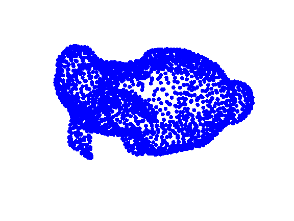

GSP_PCL_NN_GRAPH - Create a nearest neighbors graph from a point cloud
Usage
: G = gsp_pcl_nn_graph( Xin ); G = gsp_pcl_nn_graph( Xin, param );
Input parameters
| Xin | Input points |
| param | Structure of optional parameters |
Output parameters
| G | Resulting graph |
Description
'gsp_pcl_nn_graph( Xin, param )' creates a graph from positional data. The points are connected to their neighbors (either belonging to the k nearest neighbors or to the epsilon-closest neighbors.
Example:
P = gsp_pointcloud('bunny');
param.type = 'knn';
G = gsp_pcl_nn_graph(P, param);
gsp_plot_graph(G);
This code produces the following output:
WARNING : The matrix W is not symmetric ! Artificial symmetrization
Additional parameters
- param.type : ['knn', 'radius'] the type of graph
- param.center : [0, 1] center the data
- param.rescale : [0, 1] rescale the data (in a 1-ball)
- param.sigma : float the variance of the distance kernel
- param.k : int number of neighbors for knn
- param.epsilon : float the radius for the range search